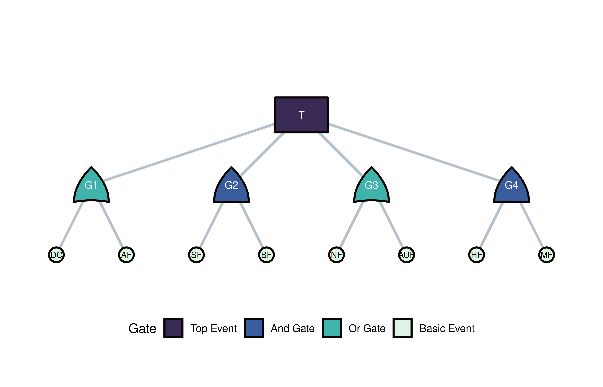
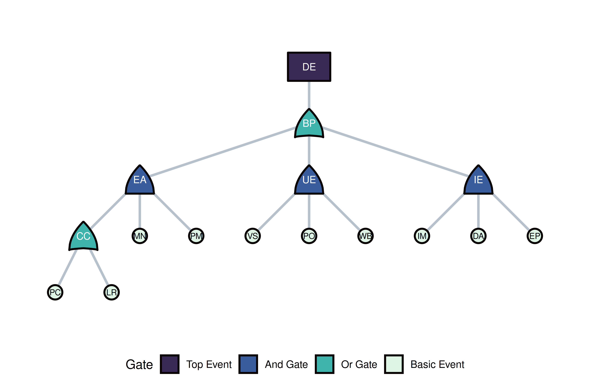

tidyfault builds fault-tree plots on top of
ggplot2 and ggraph. The workhorse is
illustrate(),
which lays out nodes and edges; the plot() method returns a
ggplot object you can extend.
Use type = "all" to draw gates and basic events
together:
library(tidyfault)
library(ggplot2)
data("db_nodes")
data("db_edges")
gg_db <- illustrate(nodes = db_nodes, edges = db_edges, type = "all")
plot(
gg_db,
gate_fill = c(top = "#382a54", and = "#395d9c", or = "#3eb4ad", "basic event" = "#def5e5")
)
illustrate()
returnsillustrate() returns a list with components used by
plot() (node positions, edge paths, gate polygons). You can
inspect gg_db$nodes or add ggplot layers on top of
plot(gg_db).
The bundled IT security tree (it_security_nodes,
it_security_edges)
uses type = "both" to emphasize gate structure and basic
events:
data("it_security_nodes")
data("it_security_edges")
gg_sec <- illustrate(
nodes = it_security_nodes,
edges = it_security_edges,
type = "both"
)
plot(
gg_sec,
gate_fill = c(top = "#382a54", and = "#395d9c", or = "#3eb4ad", "basic event" = "#def5e5")
)
Typical order:
illustrate() → plot()
whenever you need to communicate structure to collaborators.| Topic | Function |
|---|---|
| Layout and geometry | illustrate() |
| ggplot wrapper | plot() |
| Gate drawing primitives | gate_and(), gate_or(), gate_top(), get_gate() |